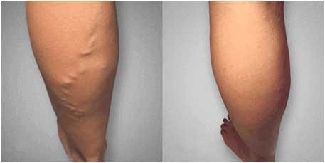

Wysłany , o 19:51 | Autor Kasia
Cześć, tu ponownie Kasia! Chcę podzielić się z wami swoją małą radością... Wreszcie udało mi się POZBYĆ żylaków w domowych warunkach, w ciągu po przejściu kuracji!!! Pamiętacie, pisałam około rok temu, że strasznie bolą mnie nogi i pojawiły się żylaki, i prosiłam o radę jak się ich pozbyć?
A więc, wypróbowałam wszystkie tradycyjne środki, w tym pączki brzozowe i inne głupoty, plus leki w celu poprawy przepływu krwi i rajstopy uciskowe i tak dalej. TO WSZYSTKO BZDURA. Nie pomaga.
Bezużyteczne. Chodziłam do lekarzy, którzy w końcu w niczym mi nie pomogli, a tylko udzielili reprymendy, że długo zwlekałam z leczeniem. W pracy wzięłam tydzień bezpłatnego urlopu. Stresowałam się, myślałam o tym, jak pozbyć się żylaków i przywrócić piękno i zdrowie swoich nóżek, i szukałam w Internecie różnych sposobów leczenia.
I oto pewnego dnia, szperając po blogach w Internecie, na jakimś forum medycznym zainteresowała mnie informacja warszawskiego lekarza o tym, że w Polsce leczenie żylaków nie jest skuteczne, ponieważ tradycyjna medycyna nie leczy przyczyn choroby, a jej objawy.
Przy czym wspominał on o nowym kremie przeciw żylakom , który daje bardzo dobre wyniki. Długo szukałam informacji o tym, gdzie można kupić ten krem i znalazłam ten sklep.
Na początku nie bardzo wierzyłam w to wszystko, bo już tyle tego reklamują w TV... ale znalazłam tak dużo dobrych opinii o tym kremie, że zdecydowałam się go zamówić.
Ostatecznie zamówiłam . Paczka dotarła po tygodniu. Rozpakowałam, przeczytałam instrukcję i zacząłem go używać
Zaczęłam stosować ten krem zgodnie z instrukcją. I jak myślicie? Już w 5 dniu zmniejszyły się obrzęki i żylaki zaczęły znikać w oczach, a mnie prawie szczęka opadła na ziemię!!! Pozbyłam się ŻYLAKÓW!!! W 5 dni!!!!! Możecie w to uwierzyć???

Nie wierzyłam własnym oczom... Nogi zostały oczyszczone z pajączków, stały się piękne i przestały boleć!!!!! Nie pomyliłam się i nie zwariowałam! Nie potrafię opisać swojej radości. Ostatni raz tak się cieszyłam chyba z 20 lat temu :)
Teraz czuję się zupełnie zdrowym człowiekiem. Ha! jestem nawet wdzięczna swojej chorobie — żylaki nauczyły mnie doceniać to, co mam i inaczej patrzeć na drobne życiowe problemy. Staram się nie myśleć o tym, jakim wrakiem bym była, gdybym nie trafiła na . Teraz w moim życiu nie ma miejsca na ponure i smutne myśli, tylko na pozytywne! Szalenie się cieszę, że tak wyszło. Równocześnie z wyzwoleniem od żylaków zdałam sobie sprawę, że problem wielu z nas tkwi w tym, że najprostsze rzeczy wydają nam się nieskuteczne. A bardziej skomplikowane, jak na przykład operacje, skuteczne. Ale tak wcale nie jest.
Żylaki można wyleczyć w bardzo prosty, szybki i bezpieczny sposób. Sprawdziłam!
Dla zainteresowanych - zamówienie zrobiłam na tej stronie. To jedyna certyfikowana firma w Polsce, która sprzedaje . Co do wysyłki, paczka przychodzi za pobraniem pocztą, dlatego wszystko jest bezpieczne. Cena na jest teraz obniżona, więc pośpiesz z zamówieniem! Cóż, mam nadzieję, że ta informacja była przydatna i w końcu przywrócicie pożądane piękno i zdrowie nóg w ciągu kilku dni! Powodzenia!